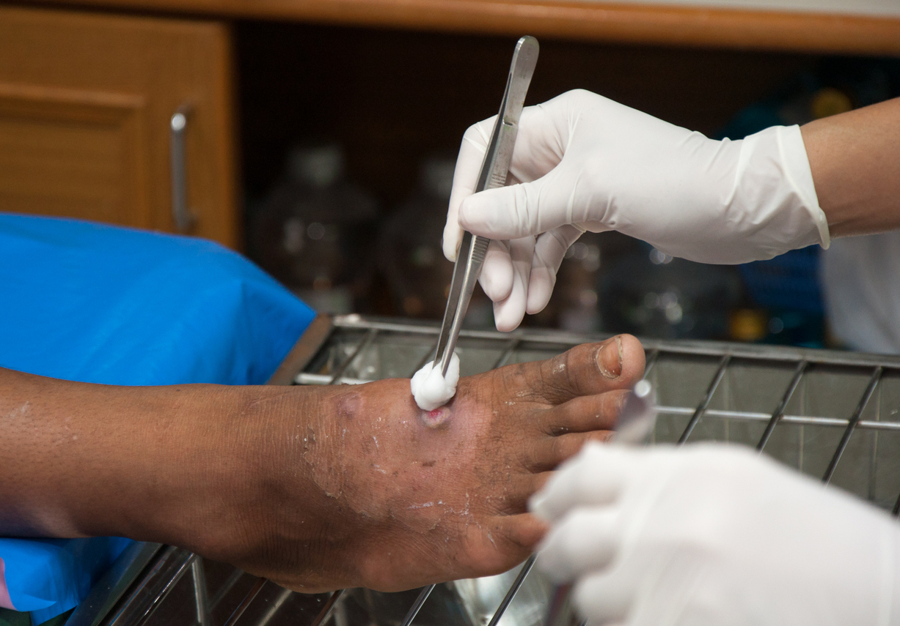

Comfort & Convenience
Receive wound dressing assistance without unnecessary travel.
Receive careful and dependable wound dressing assistance in the comfort of your home, with support focused on hygiene, comfort, and recovery.
Professional assistance at home can make routine wound care more convenient while helping maintain cleanliness, comfort, and a consistent care routine.
Receive wound dressing assistance without unnecessary travel.
Support with maintaining a clean and organized wound-care routine.
Assistance based on your individual needs and care instructions.
Dependable support for you and your family at home.
Careful assistance designed to support safe, comfortable, and consistent wound dressing routines at home.
Assistance with regular dressing changes according to the recommended care routine.
Support for maintaining proper care of wounds following surgery and after surgery.

Attentive assistance for individuals requiring ongoing pressure-wound care.
Hygiene-focused assistance to help maintain a clean wound-care environment.
Our home-care approach follows a clear and organized process to make wound dressing assistance convenient and comfortable.
Understand the wound-care requirements and existing care instructions.
Organize the required dressing materials and maintain a clean setup.
Provide careful assistance with the dressing routine as instructed by the professional.
Help maintain the recommended care routine and provide guidance on the next steps.
Following the recommended care instructions and maintaining a clean routine can help make wound dressing assistance more organized and comfortable.
Wound dressing should follow the instructions provided by the appropriate healthcare professional.
Keep the wound-care area and required supplies clean and organized.
Pay attention to changes in the wound and communicate concerns promptly.
Seek appropriate medical attention if concerning symptoms or unexpected changes occur.
Find answers to some common questions about receiving wound dressing assistance at home.
Wound dressing care at home provides assistance with the recommended dressing routine in a familiar home environment, following the care instructions provided by the appropriate healthcare professional.
Home wound dressing assistance may be helpful for individuals who have an ongoing dressing routine and need support at home, according to their healthcare professional's recommendations.
The timing of dressing changes depends on the type of wound, dressing used, and the care plan recommended by the appropriate healthcare professional.
Yes. Home assistance may be arranged for post-surgical wound care when it is part of the recommended care plan and appropriate support is required.
Contact an appropriate healthcare professional if you notice concerning symptoms, unexpected changes, or anything that causes concern about the wound or recovery.
You can contact our home-care team to discuss your requirements, available services, and suitable arrangements for assistance at home.
Make your wound-care routine more comfortable with dependable assistance in the familiar surroundings of your home.